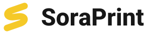
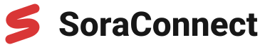

Version 1.1 — 18 novembre 2026. Direction choisie par le porteur du projet : piste 02, « Le S continu ».
SoraLink représente le groupe entrepreneurial basé à Oujda, Maroc. SoraPrint représente l’impression et la personnalisation. SoraConnect représente les solutions numériques. Ces marques ne présument ni la création de sociétés distinctes ni un statut juridique de holding.
Promesse : réunir les supports physiques et les outils numériques pour rapprocher les professionnels de leurs clients. Positionnement : professionnel accessible, créatif, humain et fiable.
Signature de rattachement des divisions : « Une division du Groupe SoraLink ». La signature est un texte d’accompagnement, pas un élément obligatoire du logo en petit format.
Un seul symbole, un S continu à terminaisons arrondies. Un seul dessin pour les trois marques. Ne pas le retourner, l’étirer, modifier sa courbe selon la division ou ajouter une ombre, un volume ou un dégradé.
Les fichiers SVG sont les masters de travail : texte converti en tracés pour les logos horizontaux, couleurs RGB en aplats, fond transparent sauf variante dark. Ils reprennent les contours du symbole et du lettrage de la planche choisie par le porteur du projet. Le premier redessin a été retiré : ne pas le réutiliser. La partie « Sora » et le symbole sont identiques dans les trois marques. Les couleurs sont les aplats de la palette officielle.
Construction : le symbole est conservé dans un cadre de 131 × 149 unités. Il comprend les deux contours et les espaces intérieurs visibles dans la planche choisie ; ne pas le remplacer par un trait à épaisseur constante. Le lettrage est en tracés, sans police de substitution. La largeur varie avec le suffixe, jamais par étirement. Respecter une zone libre d’au moins 26 unités autour du dessin.
Usage : version horizontale en priorité. Symbole seul pour favicon et avatar. Ne pas utiliser le logo horizontal à une taille où le nom devient illisible ; passer au symbole seul. Seuil de travail : logo horizontal à partir de 140 px à l’écran ou 30 mm imprimés, à confirmer sur une épreuve réelle. Symbole seul à partir de 24 px ; à 16 px, contrôler le rendu dans le navigateur et simplifier l’icône dédiée si nécessaire.
| Usage | Code RGB |
| ------------ | -------- |
| Noir commun | #171717 |
| Blanc commun | #FFFFFF |
| SoraLink | #F47721 |
| SoraPrint | #F5C928 |
| SoraConnect | #D93636 |
L’accent appartient au symbole et aux éléments de repérage. Le nom reste noir sur fond clair, blanc sur fond sombre. Sur les fonds jaune et orange, privilégier le texte noir. Le jaune sur blanc ne convient pas au texte courant. Le rouge de marque ne remplace pas les libellés d’erreur ou de suppression : ces états gardent un texte et une icône explicites.
Les valeurs RGB sont la référence numérique. Ne pas présenter une conversion CMJN automatique comme une couleur contractuelle : demander au prestataire son profil, son papier et une épreuve avant tirage. Aucun Pantone n’est attribué.
Le lettrage des logos est celui de la planche choisie, conservé en tracés ; il ne doit pas être recomposé avec Roboto. Roboto reste la famille commune des interfaces et des textes : 400 pour les textes, 600–700 pour les actions et titres. Cairo accompagne les contenus arabes. Les marques latines restent composées de gauche à droite dans les pages arabes. Garder des hauteurs de ligne généreuses et ne pas appliquer un espacement latin négatif aux caractères arabes.
Les polices ne sont pas incluses dans ce kit. Les logos exportés en tracés ne nécessitent aucune installation de police. Vérifier les licences à la source avant toute redistribution des fichiers de police.
Conception mobile en priorité. Hiérarchie : une promesse, une preuve ou un exemple, une action. Titres courts, textes concrets, prix confirmés ou demande de devis explicite. Une action principale visible par section. Boutons tactiles d’au moins 48 px de hauteur ; état de focus visible ; liens compréhensibles sans dépendre de la couleur.
Base commune : fond blanc, texte noir, sections aérées, alignements nets, arrondis modérés. Les fonds sombres servent à structurer les pages sans suggérer le luxe. Les univers des divisions sont distingués par l’accent, les sujets photographiés et le contenu.
Icônes : utiliser la famille Lucide déjà présente dans le produit, traits et dimensions cohérents. Le symbole de marque reste distinct des icônes d’interface.
Priorité aux photographies réelles des produits, de l’atelier et des usages, avec accord pour les personnes identifiables. Éclairage naturel ou diffus, matières fidèles, cadrage simple, arrière-plans sobres. Ne pas retoucher une prestation au point d’en fausser le résultat attendu.
Toute image générée ou maquette doit être identifiée comme illustration conceptuelle si elle pourrait être prise pour une réalisation. Aucun faux avis, client, chiffre de vente ou partenariat.
• Logos horizontaux pour les trois marques : couleur, noir, blanc, fond sombre.
• Symboles seuls et avatars.
• PNG de prévisualisation ; SVG modifiables avec typographie en tracés.
• Visuels de partage 1200 × 630 px.
• Modèles de carte, publication et papier à en-tête : fichiers de travail, pas des produits ou réalisations vendus.
Les cartes imprimées sont des gabarits de composition. Ajouter fond perdu, profil et marques de coupe selon les exigences de l’imprimeur avant de lancer la production.
SoraPrint : impression, papeterie et personnalisation à étudier sur devis. La présence d’un équipement dans l’atelier ne prouve pas la maîtrise d’une prestation. Avant publication d’un produit précis, confirmer support, format, quantité minimale, coût réel, qualité, délai et disponibilité.
Équipements identifiés dans le dossier : Konica Minolta bizhub C258, Epson L18050, Cricut Maker, presse 40 × 40 cm, kit de sublimation ; accessoire mugs à tester. DTF, DTG, UV, UV-DTF, laser et broderie professionnelle ne sont pas annoncés comme disponibles.
SoraConnect : la plateforme de cartes digitales reste accessible. Les possibilités de sites, logiciels ou automatisations sont étudiées sur besoin ; elles ne sont pas présentées comme des produits prêts à acheter.
Parcours commercial commun : demande → qualification → vérification de faisabilité → devis → validation du contenu et du visuel → paiement selon les conditions convenues → production/activation → contrôle → livraison → assistance.
Un identifiant de dossier commun et une division responsable par vente suffisent au démarrage. Suivre séparément les revenus, coûts de matière, temps et marge par division, avec une synthèse du groupe. Ne pas multiplier les outils avant de connaître les volumes.
Offres croisées à chiffrer : carte papier + profil digital ; packaging + page QR ; support de comptoir + catalogue. Ce sont des propositions commerciales, pas des packs tarifés déjà validés.
• / : présentation du groupe.
• /soraprint : vitrine SoraPrint.
• /soraconnect : vitrine SoraConnect et accès à la plateforme.
• /?app=1 et /?tab=… : espace applicatif existant conservé.
• /?offre=1 : présentation historique de la plateforme et des tarifs.
• /?offer=… : liens commerciaux historiques conservés.
• /c/[id] et /[name] : cartes publiques conservées, hors carte SoraPrint supprimée sur instruction explicite.
• /auth, /admin, /api : fonctions existantes conservées.
• /groupe/soraprint et /groupe/soraconnect : redirections permanentes vers les nouvelles vitrines.
La vitrine ne nécessite pas une seconde base clients. Conserver le dépôt et l’infrastructure actuels. Séparer le contenu institutionnel, la présentation commerciale et les fonctions applicatives dans les composants ; ne pas renommer les ressources techniques de production pour une raison de marque.
Infrastructure : Cloudflare Pages pour le déploiement, D1 pour les données, R2 pour les médias, Supabase Auth pour l’identité, Resend pour les notifications. Aucun changement de schéma ni nouvelle dépendance de production pour les vitrines.
L’identité juridique du vendeur, l’adresse complète, les identifiants applicables, les décisions de conservation et les conditions commerciales définitives restent à fournir. Les anciennes conditions de la plateforme ne deviennent pas automatiquement les CGV d’impression.
Les quatre secrets de sauvegarde non renseignés ne sont pas inventés ni placés dans ce kit. Une sauvegarde automatique n’est considérée opérationnelle qu’après un premier cycle et une vérification concluants.
Avant impression : vérifier l’unicité et la disponibilité du signe et des noms par une recherche de marque appropriée. Le dessin n’est accompagné d’aucune garantie d’enregistrement ou d’exclusivité.
Pour une brochure commerciale complète : fournir photos réelles, capacités testées, prix de revient, délais et conditions de livraison. La vitrine actuelle permet de qualifier les demandes sans inventer ces informations.